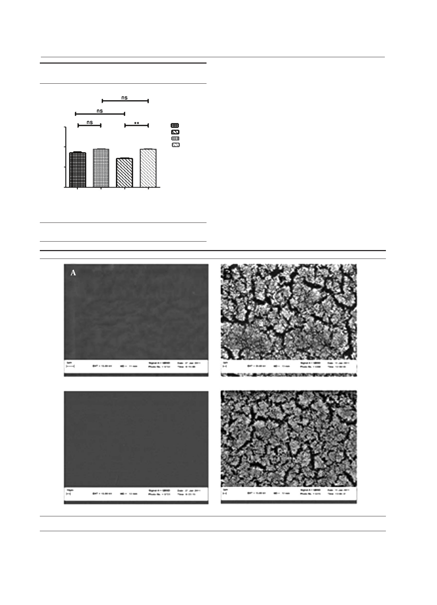

Fazly Bazzaz BS et al.
Figure 4. Ratio of Positive Field in SEM Picture on Different Brands of
Hydrophilic IOLs With the S. epidermidis DSMZ3270 Strain
150
100
%
50
0
24h A 72h A 24h B
Hours
72h B
24h A
24h B
72h A
72h B
P > 0.05 = ns
P < 0.01 = **
Bars and error bars represent the mean ± SD of results in triplicate experi-
ments (n = 3; *P < 0.05). ns: non-significant, A and B two different brands.
4.3. SEM of S. epidermidis Biofilm Development
As observed in Figure 4, there were no significant differ-
ences between the two brands of hydrophilic acrylic at 24
and 72 hours with the DSMZ3270 strain (P > 0.05). How-
ever, there were no significant differences within each
brand at 24 and 72 hours with the DSMZ3270 strain. There
was no meaningful difference between hydrophilic and
hydrophobic IOLs at 24 hours with the DSMZ3270 strain.
Scanning electron microscopy (SEM) was performed to
examine the biofilm and adherence of each IOL. Also four
lenses were incubated with sterile TSB medium, as control,
to evaluate surface properties of hydrophilic acrylic and
hydrophobic PMMA lenses (Figure 5). Rates of biofilm-
positive SEM fields on the IOLs were defined as the surface
covered by biofilm on over at least half of the area.
A scanning electron microscope (SEM) was employed to
observe the biofilm formation on each IOL material (Fig-
ure 5). The presence of biofilm was defined by recogni-
tion of slime and a multilayer formation of bacteria (Fig-
ure 5). In both brands of IOLs, the biofilm was recognized
at 24 hours of incubation and developed over 48 hours.
Figure 5. The Results of Scanning Electron Microscope
(A) Control lense of A IOLs in ×10000, control lense of B IOLs in ×10000. (B) Biofilm formation by S. epidermidis (DSMZ 3270) on foldable IOL (1) Slime forma-
tion of bacteria on A IOL (field positive), Slime formation of bacteria on B IOL (field positive).
Jundishapur J Microbiol. 2014;7(5):e10020
5